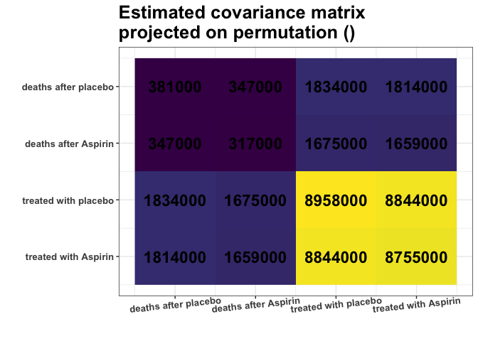
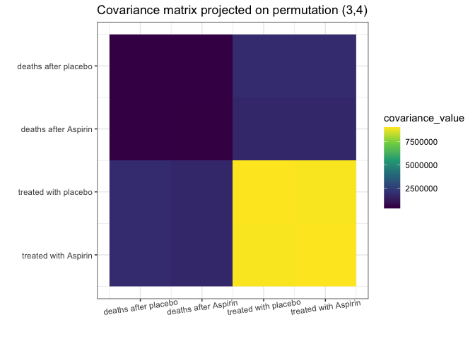
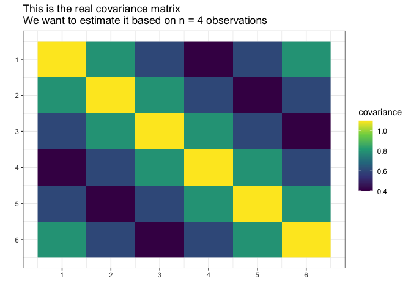
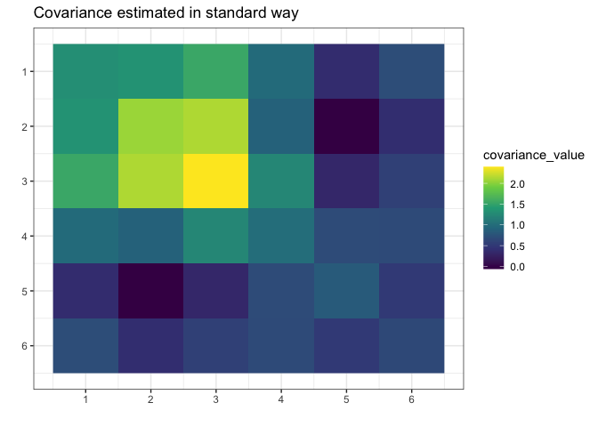
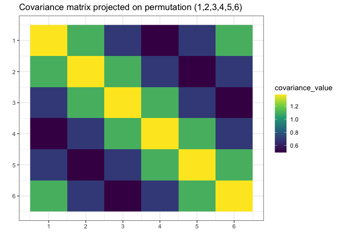

gips - Gaussian model Invariant by Permutation Symmetry
gips is an R package that looks for permutation symmetries in the multivariate Gaussian sample. Such symmetries reduce the free parameters in the unknown covariance matrix. This is especially useful when the number of variables is substantially larger than the number of observations.
gips will help you with two things:
- Finding hidden symmetries between the variables.
gipscan be used as an exploratory tool for searching the space of permutation symmetries of the Gaussian vector. Useful in the Exploratory Data Analysis (EDA). - Covariance estimation. The Maximum Likelihood Estimator (MLE) for the covariance matrix is known to exist if and only if the number of variables is less or equal to the number of observations. Additional knowledge of symmetries significantly weakens this requirement. Moreover, the reduction of model dimension brings the advantage in terms of precision of covariance estimation.
Installation
From CRAN:
# Install the released version from CRAN:
install.packages("gips")From GitHub:
# Install the development version from GitHub:
# install.packages("remotes")
remotes::install_github("PrzeChoj/gips")Examples
Example 1 - EDA
Assume we have the data, and we want to understand its structure:
library(gips)
Z <- HSAUR::aspirin
# Renumber the columns for better readability:
Z[,c(2,3)] <- Z[,c(3,2)]Assume the data Z is normally distributed.
dim(Z)
#> [1] 7 4
number_of_observations <- nrow(Z) # 7
perm_size <- ncol(Z) # 4
S <- cov(Z)
round(S)
#> [,1] [,2] [,3] [,4]
#> [1,] 381405 345527 1864563 1813725
#> [2,] 345527 316411 1711853 1663065
#> [3,] 1864563 1711853 9305049 8991343
#> [4,] 1813725 1663065 8991343 8755176
g <- gips(S, number_of_observations)
my_add_text(plot(g, type = "heatmap"))
Remember, we analyze the covariance matrix. We can see some strong similarities between the covariances of columns 3 and 4. Those have similar variances (S[3,3] ≈ S[4,4]), and their covariances with the rest of the columns are alike (S[1,3] ≈ S[1,4] and S[2,3] ≈ S[2,4]).
Note that the variances of columns 1 and 2 are also similar, but the covariances with other columns (3 and 4) are not alike.
Let’s see if the find_MAP() will find this relationship:
g_MAP <- find_MAP(g, optimizer = "brute_force")
#> ================================================================================
g_MAP
#> The permutation (3,4)
#> - was found after 24 log_posteriori calculations
#> - is 1.062e+14 times more likely than the starting, () permutation.The find_MAP found the relationship (3,4). In its opinion, the variances [3,3] and [4,4] are so close to each other that it is reasonable to consider them equal. Similarly, the covariances [1,3] and [1,4]; just as covariances [2,3] and [3,4], also will be considered equal:
S_projected <- project_matrix(S, g_MAP[[1]])
round(S_projected)
#> [,1] [,2] [,3] [,4]
#> [1,] 381405 345527 1839144 1839144
#> [2,] 345527 316411 1687459 1687459
#> [3,] 1839144 1687459 9030113 8991343
#> [4,] 1839144 1687459 8991343 9030113
my_add_text(plot(g_MAP, type = "heatmap"))
This S_projected matrix can now be interpreted as a more stable covariance matrix estimator.
We can also interpret the data suggesting there is, for example, the same covariance of “number of deaths after Aspirin” with “number of people treated with *” no matter if the “*” represents the placebo or Aspirin.
Example 2 - modeling
First, construct data for the example:
# Prepare model, multivariate normal distribution
perm_size <- 6
mu <- numeric(perm_size)
sigma_matrix <- matrix(
data = c(
1.1, 0.8, 0.6, 0.4, 0.6, 0.8,
0.8, 1.1, 0.8, 0.6, 0.4, 0.6,
0.6, 0.8, 1.1, 0.8, 0.6, 0.4,
0.4, 0.6, 0.8, 1.1, 0.8, 0.6,
0.6, 0.4, 0.6, 0.8, 1.1, 0.8,
0.8, 0.6, 0.4, 0.6, 0.8, 1.1
),
nrow = perm_size, byrow = TRUE
) # sigma_matrix is a matrix invariant under permutation (1,2,3,4,5,6)
# Generate example data from a model:
Z <- withr::with_seed(2022,
code = MASS::mvrnorm(4, mu = mu, Sigma = sigma_matrix)
)
# End of prepare modelSuppose we do not know the true covariance matrix Σ and we want to estimate it. We cannot use the standard MLE because it does not exists (4 < 6, n < p).

We will assume it was generated from the normal distribution with the mean 0.
library(gips)
dim(Z)
#> [1] 4 6
number_of_observations <- nrow(Z) # 4
perm_size <- ncol(Z) # 6
# Calculate the covariance matrix from the data:
S <- (t(Z) %*% Z) / number_of_observationsMake the gips object out of data:
g <- gips(S, number_of_observations, was_mean_estimated = FALSE)We can see the standard estimator of the covariance matrix, Σ̂ = (1/n) ⋅ Σi = 1n(Z(i) ⋅ (Z(i)⊤)). It is not MLE (again, because MLE does not exists for n < p):

Find the Maximum A Posteriori Estimator for the permutation. Space is small (6! = 720), so it is reasonable to browse the whole of it:
g_map <- find_MAP(g, optimizer = "brute_force")
#> ================================================================================
g_map
#> The permutation (1,2,3,4,5,6)
#> - was found after 720 log_posteriori calculations
#> - is 504.049 times more likely than the starting, () permutation.We see that the found permutation is hundreds of times more likely than making no additional assumption. That means the additional assumptions are justified.
What is more, we see the number of observations (4) is bigger or equal to n0 = 1, so we can estimate the covariance matrix with the Maximum Likelihood estimator:
S_projected <- project_matrix(S, g_map[[1]])
S_projected
#> [,1] [,2] [,3] [,4] [,5] [,6]
#> [1,] 1.3747718 1.0985729 0.6960213 0.4960295 0.6960213 1.0985729
#> [2,] 1.0985729 1.3747718 1.0985729 0.6960213 0.4960295 0.6960213
#> [3,] 0.6960213 1.0985729 1.3747718 1.0985729 0.6960213 0.4960295
#> [4,] 0.4960295 0.6960213 1.0985729 1.3747718 1.0985729 0.6960213
#> [5,] 0.6960213 0.4960295 0.6960213 1.0985729 1.3747718 1.0985729
#> [6,] 1.0985729 0.6960213 0.4960295 0.6960213 1.0985729 1.3747718
# Plot the found matrix:
plot(g_map, type = "heatmap") + ggplot2::ggtitle("Covariance estimated with `gips`")
We see gips found the data’s structure, and we could estimate the covariance matrix with huge accuracy only with a small amount of data and additional reasonable assumptions.
Note that the rank of the S matrix was 4, while the rank of the S_projected matrix was 6 (full rank).
Further reading
For more examples and introduction, see vignette("gips", package="gips") or its pkgdown page.